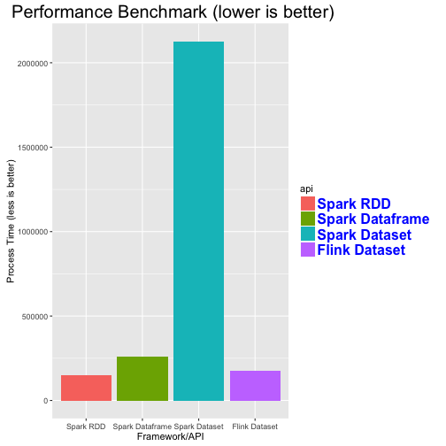

Data scientist and engineer at Connecterra since Feb 2017
1.5 year in consulting at Accenture
M.Sc. in logic and PhD-in-progress in mathematical logic
B.Eng. in Software Engineer from China
Two years experience with Scala
Learned about Shapeless in Dec 2016

The task
case class Event(userID: Int, activityType: String,
timeStamp: Long, duration: Long)
val rawEvents: RDD[Event] = ???
def processSittingEvents(sittingEvents: RDD[Event]) = ???
def processWalkingEvents(walking: RDD[Event]) = ???
val sittingResult =
processSittingEvents(rawEvents.filter(_.activityType == "sitting"))
val walkingResult =
processWalkingEvents(rawEvents.filter(_.activityType == "walking"))
Would be nice if we could write
case class Event(userID: Int, activityType: String,
timeStamp: Long, duration: Long)
val rawEvents: RDD[Event] = ???
def processEvents[T](rawEvents: RDD[Event]) = ???
val sittingResult = processEvents[Sitting](rawEvents)
val walkingResult = processEvents[Walking](rawEvents)
import shapeless.syntax.singleton._
val sittingWit = "sitting".witness
type Sitting = sittingWit.T
val walkingWit = "walking".witness
type Walking = walkingWit.T
trait Aggregator[T]{
type Result
type Representation
def name: String
def extract(rawEvents: RDD[Event]): RDD[Representation]
def aggregate(internalReprRDD: RDD[Representation]): Result
def process: RDD[Event] => Result = aggregate _ compose extract
}
object Aggregator{
implicit def basicActivityAggregator[A <: String]
(implicit wtA: Witness.Aux[A]): Aggregator[A] = new Aggregator[A]{
type Result = RDD[(Int, Double)] //userID and total duration
type Representation = (Int, Double)
def name = wtA.value
def extract(rawEvents: RDD[Event]) =
rawEvents
.filter(_.activityType == name)
.map(e => (e.userID, e.duration))
def aggregate(internalReprRDD: RDD[Representation]) =
internalReprRDD
.aggregateByKey(0.0)(_ + _, _ + _)
}
}
object AggregatorsWithCounts {
import shapeless._
def basicActivityAggregatorWithCounts[A <: String]
(implicit wtA: Witness.Aux[A]): Aggregator[A] = new Aggregator[A]{
type Result = RDD[(Int, (Double, Int))] //userID and total duration
type Representation = (Int, (Double, Int))
def name = wtA.value
def extract(rawEvents: RDD[Event]) =
rawEvents
.filter(_.activityType == name)
.map(e => (e.userID, (e.duration, 1)))
val monoid = implicitly[Monoid[(Double, Int)]]
import MonoidSyntax._
def aggregate(internalReprRDD: RDD[Representation]) =
internalReprRDD
.aggregateByKey(monoid.zero)(_ |+| _, _ |+| _)
}
}
def processEvents[T](rawEvents: RDD[Event])
(implicit aggregator: Aggregator[T]): aggregator.Result
= aggregator.process(rawEvents)
val rawEvents: RDD[Event] = ???
implicit val sittingAggregator: Aggregator[Sitting]
= AggregatorsWithCounts.basicActivityAggregatorWithCounts[Sitting]
val sittingResult2 = processEvents[Sitting](rawEvents)
val walkingResult2 = processEvents[Walking](rawEvents)
implicit val rawRDD: RDD[Event] = ???
val intctRDD = implicitly[IntercectionActivityRDD]
val sittingEatingResult: RDD[(Key, SimpleAggregation)]
= intctRDD.intercectionAggregation[Key, Sitting, Eating]
trait ActivityIntercectionMonoid[A <: String, B<: String]
extends Monoid[ActivityIntercection[A, B]] {
implicit def orderingA: Ordering[ActivityWithType[A]]
implicit def orderingB: Ordering[ActivityWithType[B]]
implicit def orderingCombin: Ordering[CombinedActivity[A, B]]
}
object ActivityIntercectionMonoid{
implicit def getActIntMonoid[A <: String, B<: String]
(implicit wtA: Witness.Aux[A], wtB: Witness.Aux[B])
= new ActivityIntercectionMonoid[A,B]{
???
}
}
trait KeyedActivityRDD[K, A] extends Serializable{
implicit val keyedRDD: RDD[(K, A)]
def aggregation[S](implicit classTagS: ClassTag[S],
lift: A => S, monoid: Monoid[S]): RDD[(K,S)]
}
object KeyedActivityRDD{
implicit def apply[K, A](implicit classTagK: ClassTag[K],
classTagA: ClassTag[A], rdd: RDD[(K, A)])
: KeyedActivityRDD[K,A] = new KeyedActivityRDD[K,A]{
implicit val keyedRDD = rdd
implicit def aggregation[S](implicit classTagS: ClassTag[S],
lift: A => S, monoid: Monoid[S]): RDD[(K,S)] ={
import MonoidSyntax._
keyedRDD.mapValues(lift)
.aggregateByKey(monoid.zero)(_ |+| _, _ |+| _)
}
}
}
case class SittingAggregation(totalDuration: Double, eventCount: Int)
implicit rawData: RDD[(K,A)] = ???
val result = implicitly[ActivityIntercectionMonoid[K,A]]
.aggregation[SittingAggregation]